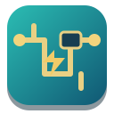
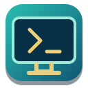
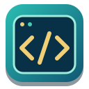

Laboratório de Robótica e Programação
Glossário ilustrado de peças e funções
O glossário é parte do laboratório: conheça cada componente, descubra sua função, compreenda as grandezas elétricas e volte à missão com mais autonomia. Use-o sempre que encontrar um termo desconhecido.
Missões interativas em destaque
As experiências são o centro do laboratório. Escolha uma, monte o circuito, observe o resultado e depois investigue a explicação.
Mais três missões para investigar
Missões de hardware e software
Central de Diagnósticos
Três desafios com estilos próprios: uma oficina de manutenção, um terminal de programação e uma estação agrícola. Descubra o defeito, teste hipóteses e corrija o sistema.
🕵️ Iniciar investigação →Como funciona: 1. Escolha a experiência → 2. Faça uma previsão → 3. Experimente → 4. Explique e ganhe TanCoins. As demais bancadas permanecem disponíveis.
Comece com um desafio, experimente, descubra o conceito e ganhe TanCoins. Todas as bancadas e missões anteriores continuam disponíveis abaixo.
Imagine. Construa. Conecte. Programe. Teste.
Escolha sua bancada
Explore uma área ou combine conhecimentos para construir uma máquina funcional.

Circuitos e componentesReconheça peças, encontre conexões e investigue falhas.
Abrir desafios de circuitos →
Montagem de hardwareConstrua um computador por partes, identifique funções e teste o sistema.
Abrir Computador Vivo →
ProgramaçãoEscreva comandos, use sensores, condições e repetições para controlar um robô.
Ir aos desafios de programação ↓Estude → monte → teste → explique.
AlgoritmosCondiçõesRepetiçõesSensores e robôsAulas do Tangram e materiais SEED-PR →Aguardando montagem
🔧 Bancada de montagem
Observe a função pedida em cada encaixe. Selecione uma peça, leia sua função e escolha onde instalá-la. Nem todas as peças são necessárias.
Conheça as peças
Toque em uma peça para descobrir suas características e aplicações.
Programação
Escreva seu programa ou toque nos comandos para inseri-los. Execute, observe e corrija. Os comandos são didáticos, não Python.
Entenda os comandos
Selecione um comando para saber o que ele faz.
Protótipo pedagógico conceitual: os encaixes representam dependências funcionais, não ligações elétricas reais. A linguagem de comandos é própria deste laboratório e não executa código arbitrário.